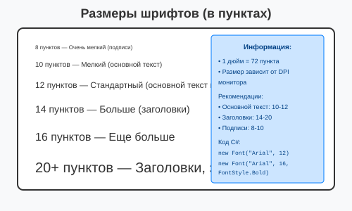

Урок 2.7: Текст и шрифты
📌 Ключевые моменты этого урока:
- Font определяет шрифт (название, размер, стиль)
- Размер шрифта указывается в пунктах (points) = 1/72 дюйма
- DrawString рисует текст (вместо других примитивов)
- StringFormat контролирует форматирование текста
- MeasureString показывает размер текста перед рисованием
- TextAlign влияет на то, как выравнивается текст
- Нужно вызывать Dispose() на созданных Font'ах
Font — определение внешнего вида текста
Font определяет шрифт для рисования текста. Включает название, размер, стиль (жирный, курсив и т.д.).
Создание шрифта:
// Простой шрифт (семейство и размер)
Font font1 = new Font("Arial", 12);
// Со стилем (Bold, Italic и т.д.)
Font font2 = new Font("Times New Roman", 16, FontStyle.Bold);
Font font3 = new Font("Courier New", 14, FontStyle.Italic);
// Комбинирование стилей
Font font4 = new Font("Arial", 12, FontStyle.Bold | FontStyle.Underline);
// Системный шрифт (берет из Windows)
Font systemFont = SystemFonts.DefaultFont;
Font messageBoxFont = SystemFonts.MessageBoxFont;Доступные семейства шрифтов:
Некоторые стандартные шрифты, которые есть почти на каждом Windows:
- Arial — читаемый, без засечек (Sans-Serif)
- Times New Roman — классический, с засечками (Serif)
- Courier New — моноширинный (для кода)
- Calibri, Segoe UI — современные Windows шрифты
- Comic Sans MS — забавный, неформальный
FontStyle (стили):
// Отдельные стили
FontStyle.Regular; // Обычный текст
FontStyle.Bold; // Толстый (жирный)
FontStyle.Italic; // Наклонный
FontStyle.Underline; // Подчеркнутый
FontStyle.Strikeout; // Зачеркнутый
// Комбинирование (используйте |)
var boldItalic = FontStyle.Bold | FontStyle.Italic;
var boldUnderline = FontStyle.Bold | FontStyle.Underline;
var allThree = FontStyle.Bold | FontStyle.Italic | FontStyle.Underline;Размер шрифта (в пунктах):
Размер указывается в типографических пунктах, где 1 дюйм = 72 пункта:

Размеры шрифтов в пунктах
DrawString — рисование текста
Простое рисование:
private void Form1_Paint(object sender, PaintEventArgs e)
{
Graphics g = e.Graphics;
Font font = new Font("Arial", 12);
// Рисование текста в поинте (10, 10)
g.DrawString("Привет, мир!", font, Brushes.Black, 10, 10);
// С использованием Point
g.DrawString("Еще текст", font, Brushes.Blue, new PointF(50, 50));
}Рисование в прямоугольнике (ограничение):
Текст может быть ограничен прямоугольником и автоматически переноситься на новую строку:
Rectangle textBox = new Rectangle(10, 10, 200, 100);
// Текст будет переноситься внутри этого прямоугольника
string longText = "Это длинный текст, который будет автоматически перенесен на новую строку внутри прямоугольника.";
g.DrawString(longText, font, Brushes.Black, textBox);
// Рисуем границу прямоугольника для наглядности
g.DrawRectangle(Pens.Gray, textBox);StringFormat — форматирование текста
Выравнивание по горизонтали:
StringFormat format = new StringFormat();
// Слева (по умолчанию)
format.Alignment = StringAlignment.Near; // ←──────────────
g.DrawString("Слева", font, Brushes.Black, rect, format);
// По центру
format.Alignment = StringAlignment.Center; // ────←────────
g.DrawString("По центру", font, Brushes.Black, rect, format);
// Справа
format.Alignment = StringAlignment.Far; // ──────────────→
g.DrawString("Слева", font, Brushes.Black, rect, format);Выравнивание по вертикали:
StringFormat format = new StringFormat();
// Сверху (по умолчанию)
format.LineAlignment = StringAlignment.Near; // ↓───────────
g.DrawString("Сверху", font, Brushes.Black, rect, format);
// По центру
format.LineAlignment = StringAlignment.Center; // ────↓──────
g.DrawString("Центр", font, Brushes.Black, rect, format);
// Внизу
format.LineAlignment = StringAlignment.Far; // ───────↓───
g.DrawString("Иззу", font, Brushes.Black, rect, format);Перенос строк и другие опции:
StringFormat format = new StringFormat();
// Без переноса (текст обрезается если не помещается)
format.FormatFlags = StringFormatFlags.NoWrap;
// С переносом (по умолчанию)
// (just don't set NoWrap)
// Другие флаги
StringFormatFlags.DirectionRightToLeft; // Для арабского/иврита
StringFormatFlags.NoClip; // Рисовать за пределами прямоугольника
StringFormatFlags.MeasureTrailingSpaces; // При MeasureString считать пробелыПрактический пример — центрирование текста в прямоугольнике:
Rectangle rect = new Rectangle(10, 10, 300, 200);
StringFormat format = new StringFormat();
format.Alignment = StringAlignment.Center;
format.LineAlignment = StringAlignment.Center;
g.DrawString("Цетрированный текст", font, Brushes.Black, rect, format);
g.DrawRectangle(Pens.Gray, rect); // Граница для наглядностиMeasureString — измерение размера текста
Нужно знать размер текста ДО рисования, чтобы его правильно разместить:
Базовое использование:
string text = "Мой текст";
Font font = new Font("Arial", 12);
// Измеряем размер
SizeF textSize = g.MeasureString(text, font);
float width = textSize.Width; // Ширина в пикселях
float height = textSize.Height; // Высота в пикселяхЦентрирование текста в форме:
private void Form1_Paint(object sender, PaintEventArgs e)
{
Graphics g = e.Graphics;
string text = "Центрированный текст";
Font font = new Font("Arial", 14);
// Измеряем текст
SizeF textSize = g.MeasureString(text, font);
// Считаем координаты для центра
float x = (this.Width - textSize.Width) / 2;
float y = (this.Height - textSize.Height) / 2;
// Рисуем в центре
g.DrawString(text, font, Brushes.Black, x, y);
}С ограничениями ширины:
string longText = "Это длинный текст, который может быть вычислен с ограничением ширины.";
Font font = new Font("Arial", 12);
// Измеряем, если текст помещается в 200 пикселей ширины
SizeF size = g.MeasureString(longText, font, 200); // Учитывает перенос
float requiredHeight = size.Height; // Реальная высота с переносомРабота со шрифтами
FontDialog — выбор шрифта пользователем:
FontDialog fontDialog = new FontDialog();
fontDialog.Font = currentFont; // Начальный шрифт
if (fontDialog.ShowDialog() == DialogResult.OK)
{
currentFont = fontDialog.Font;
this.Invalidate(); // Перерисовать форму с новым шрифтом
}Получение списка доступных шрифтов:
// Все установленные шрифты
foreach (FontFamily fontFamily in FontFamily.Families)
{
string fontName = fontFamily.Name;
// Использование fontName для создания Font
}Best Practices работы с текстом
- ✅ Всегда вызывайте Dispose() на созданных Font'ах
- ✅ Используйте MeasureString перед рисованием текста
- ✅ Для многострочного текста указывайте максимальную ширину
- ✅ Выбирайте размер шрифта в зависимости от расстояния чтения
- ✅ Обеспечьте контраст между текстом и фоном
- ✅ Проверяйте читаемость на разных DPI мониторов
- 🚫 Не используйте слишком много разных шрифтов в одном приложении
- 🚫 Избегайте очень мелких шрифтов (сложно читать, не печатается хорошо)
Практическое задание
Задание 1: Рисование текста
- Создайте обработчик события Paint
- Нарисуйте текст с разными шрифтами:
private void Form1_Paint(object sender, PaintEventArgs e) { Graphics g = e.Graphics; // Разные размеры шрифта Font font12 = new Font("Arial", 12); Font font16 = new Font("Arial", 16); Font font24 = new Font("Arial", 24); g.DrawString("Шрифт 12", font12, Brushes.Black, 10, 10); g.DrawString("Шрифт 16", font16, Brushes.Blue, 10, 40); g.DrawString("Шрифт 24", font24, Brushes.Red, 10, 80); font12.Dispose(); font16.Dispose(); font24.Dispose(); } - Используйте IntelliSense для изучения свойств Font (напишите "new Font(")
- Запустите приложение
Задание 2: Стили шрифтов
- Нарисуйте текст с разными стилями:
private void Form1_Paint(object sender, PaintEventArgs e) { Graphics g = e.Graphics; // Разные стили Font boldFont = new Font("Arial", 16, FontStyle.Bold); Font italicFont = new Font("Arial", 16, FontStyle.Italic); Font underlineFont = new Font("Arial", 16, FontStyle.Underline); Font strikeoutFont = new Font("Arial", 16, FontStyle.Strikeout); g.DrawString("Bold", boldFont, Brushes.Black, 10, 120); g.DrawString("Italic", italicFont, Brushes.Blue, 10, 150); g.DrawString("Underline", underlineFont, Brushes.Red, 10, 180); g.DrawString("Strikeout", strikeoutFont, Brushes.Green, 10, 210); boldFont.Dispose(); italicFont.Dispose(); underlineFont.Dispose(); strikeoutFont.Dispose(); } - Запустите приложение
Задание 3: StringFormat — выравнивание
- Нарисуйте текст с разным выравниванием:
private void Form1_Paint(object sender, PaintEventArgs e) { Graphics g = e.Graphics; Font font = new Font("Arial", 12); Rectangle rect = new Rectangle(10, 250, 200, 80); // По левому краю StringFormat leftFormat = new StringFormat(); leftFormat.Alignment = StringAlignment.Near; g.DrawString("Слева", font, Brushes.Black, rect, leftFormat); // По центру StringFormat centerFormat = new StringFormat(); centerFormat.Alignment = StringAlignment.Center; g.DrawString("По центру", font, Brushes.Blue, rect, centerFormat); // По правому краю StringFormat rightFormat = new StringFormat(); rightFormat.Alignment = StringAlignment.Far; g.DrawString("Справа", font, Brushes.Red, rect, rightFormat); font.Dispose(); } - Запустите приложение
Задание 4: MeasureString — центрирование
- Центрируйте текст на форме:
private void Form1_Paint(object sender, PaintEventArgs e) { Graphics g = e.Graphics; string text = "Центрированный текст"; Font font = new Font("Arial", 20); // Измеряем текст SizeF textSize = g.MeasureString(text, font); // Вычисляем координаты для центра float x = (this.ClientSize.Width - textSize.Width) / 2; float y = (this.ClientSize.Height - textSize.Height) / 2; // Рисуем в центре g.DrawString(text, font, Brushes.Black, x, y); font.Dispose(); } - Запустите приложение — текст должен быть по центру
Задание 5: FontDialog
- Добавьте на форму кнопку
- В конструкторе создайте поле для хранения шрифта:
private Font currentFont = new Font("Arial", 12); - В обработчике Click кнопки добавьте:
private void button1_Click(object sender, EventArgs e) { FontDialog fontDialog = new FontDialog(); fontDialog.Font = currentFont; if (fontDialog.ShowDialog() == DialogResult.OK) { currentFont = fontDialog.Font; this.Invalidate(); } } - В обработчике Paint используйте currentFont для рисования текста
- Запустите приложение и попробуйте выбрать другой шрифт
💡 Совет: Используйте IntelliSense для изучения всех свойств StringFormat. Начните вводить "StringAlignment." — вы увидите все варианты выравнивания.
Проверка знаний
Ответьте на вопросы, чтобы проверить, насколько хорошо вы усвоили материал:
1. Какой метод используется для рисования текста?
2. Какой метод используется для измерения размера текста?
3. Как создать шрифт с жирным начертанием?
4. Какой класс используется для форматирования текста?
5. Какое свойство StringAlignment выравнивает текст по центру?
6. Какой диалог используется для выбора шрифта?
7. Какое свойство Font задает размер шрифта?
8. Какой тип возвращает MeasureString?